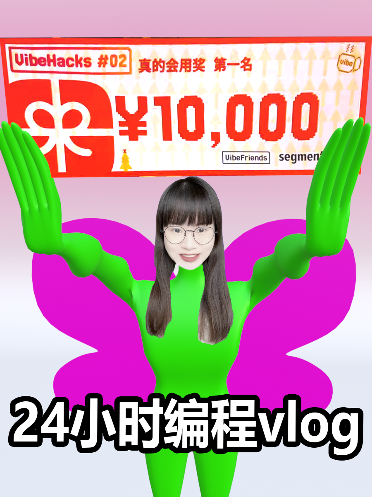

用户喜欢某位主播，却很难系统查看 TA 在不同播客中的全部出现。


BEHIND THE SCENES · VLOG我的24小时
我的24小时
编程比赛记录
学 AI 3 个月，爱听播客的我拿了一等奖。
▶ 点击看比赛 vlog ↗VIBEHACKS 02 · 24 HOURS · PRODUCT CASE
把播客发现的入口从“节目”换成“人”：聚合主播参与过的所有串台内容，让听众沿着熟悉的声音，找到下一档值得听的播客。
用户喜欢某位主播，却很难系统查看 TA 在不同播客中的全部出现。
在搜索结果与主播主页中聚合跨节目内容，降低发现成本。
用两类主播验证同一套内容发现逻辑是否具备普适性。
很多时候，我们是因为喜欢一个主播，才开始听一档播客。
搜索与详情页更强调节目和单集，人物关系被藏在 shownote 里。
同一位主播参与的串台散落在不同节目中，用户需要反复搜索。
把主播做成可点击、可聚合的内容入口，让熟悉感带来新的收听。
在原有搜索结果中加入人物名片，聚合主播参与过的节目和单集。用户不必先知道节目名称，也能从熟悉的主播开始探索。
在 shownote 中增加主播头像与人物入口，并在完整主播页聚合跨节目出现。毛冬等不同类型主播用于验证这套逻辑不只适用于单一内容类别。
项目仓库保留了两个 MVP 的完整前端代码与运行说明。所有数据均为示意数据，项目重点是产品思路和用户价值验证。